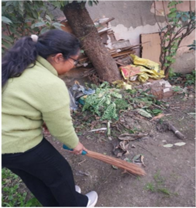
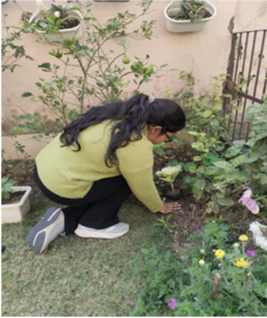
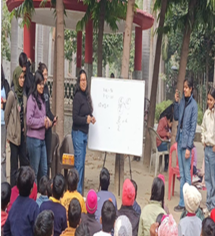
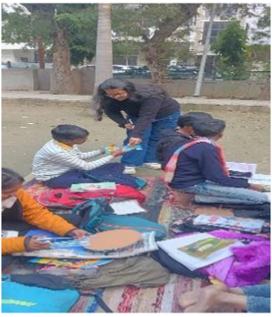
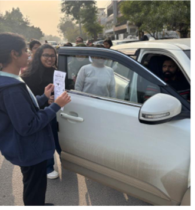
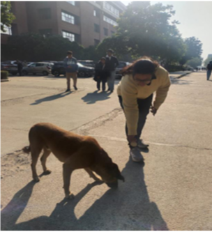
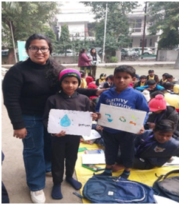

My Journey
I am a Computer Science student specializing in Artificial Intelligence and Machine Learning. My journey has developed along two connected paths: using technology to solve practical problems and participating in community initiatives that address everyday challenges.
My work with Kind Beings NGO introduced me to grassroots community action, while my academic and research projects showed me how technology can make solutions more accessible and scalable.
Community Action — Kind Beings NGO
Through Kind Beings NGO, I participated in initiatives focused on education, environmental awareness, cleanliness and responsible citizenship.
Education for Underprivileged Students
Supported initiatives aimed at helping students from underprivileged backgrounds access educational opportunities and resources.
SDG 4 • Quality Education SDG 10 • Reduced InequalitiesCleanliness Drives
Participated in community cleanliness activities promoting responsibility for shared public spaces and a cleaner environment.
SDG 11 • Sustainable Cities SDG 12 • Responsible ConsumptionTree Plantation
Contributed to tree plantation activities and environmental awareness, encouraging the community to care for green spaces.
SDG 13 • Climate Action SDG 15 • Life on LandStationery Distribution
Participated in stationery distribution initiatives to provide basic educational resources and support students in their learning.
SDG 4 • Quality Education SDG 10 • Reduced InequalitiesTraffic Rules Awareness
Participated in awareness activities encouraging safer, more responsible road behaviour and greater civic awareness.
SDG 11 • Sustainable CitiesStray Dogs Feeding
Participated in feeding initiatives for stray dogs, promoting compassion, responsible community participation and humane coexistence with animals.
SDG 11 • Sustainable Cities SDG 15 • Life on LandWater Conservation Awareness
Helped teach students about the importance of conserving water and encouraged responsible habits for using this essential resource.
SDG 6 • Clean Water & Sanitation SDG 12 • Responsible ConsumptionCommunity Impact Gallery

Community cleanliness and civic responsibility.

Environmental action and awareness.

Supporting educational access.

Providing educational resources.

Promoting responsible road behaviour.

Promoting compassion and responsible care for animals in the community.

Teaching students about responsible water use and the importance of conserving this essential resource.
Technology Projects & SDG Connections
My technical projects were not all originally created as SDG projects. However, several of them connect naturally with themes such as accessible public services, sustainable communities, safety, urban mobility, responsible innovation and data-driven decision making.
Smart-City Public Washroom Locator
During a smart-city hackathon, my team explored a solution for helping people locate nearby public washrooms and encouraging community engagement. The experience showed me how digital information can improve access to essential public services.
3D Scene Reconstruction for Smart Assistance
I combined YOLOv8, MiDaS monocular depth estimation and Open3D to reconstruct 3D environments from 2D images. A distance-based safety component explores spatial awareness for safer interaction with surroundings.
The research was accepted at ICETSIS 2026 and published in IEEE proceedings.
Chicago Crime Data Dashboard
A data-driven web dashboard using Python, Flask and SQLite to explore and visualize crime data. Working with real-world data strengthened my understanding of how accessible information can help communities understand local issues.
Delhi Transport Route Management
A geographic route visualization project using GeoJSON and React Leaflet to represent transport routes and explore urban mobility through digital mapping.
Generative Modeling of Protein–Ligand Trajectories
Research using graph neural diffusion networks for scalable generative modeling of protein–ligand trajectories. The work reflects my interest in applying advanced AI to scientific challenges.
The paper was accepted at ICIPTM-2026.
What I Learned
Creating a solution is only the beginning; creating sustained impact requires people, participation, adaptability and long-term thinking.
Community initiatives taught me that limited resources, awareness and sustained participation can affect impact. Technology projects taught me that technical performance alone does not guarantee that a solution will be useful to people.
These experiences have shaped my goal of combining technical capability with empathy and community participation, and of thinking about how ideas can move from individual projects into practical, sustainable solutions.
My SDG Focus
SDG 4
Quality Education — educational access and resources.
SDG 9
Innovation & Infrastructure — AI, data and digital solutions.
SDG 11
Sustainable Cities & Communities — smart-city, mobility, safety and awareness initiatives.
SDG 13 & 15
Climate Action and Life on Land — environmental and tree-plantation activities.
SDG 16
Peace, Justice & Strong Institutions — exploring community safety through data.
Further Work
Technical portfolio: shivika-portfolio.netlify.app
3D Reconstruction GitHub: github.com/Shivika2934/3Dreconstruction